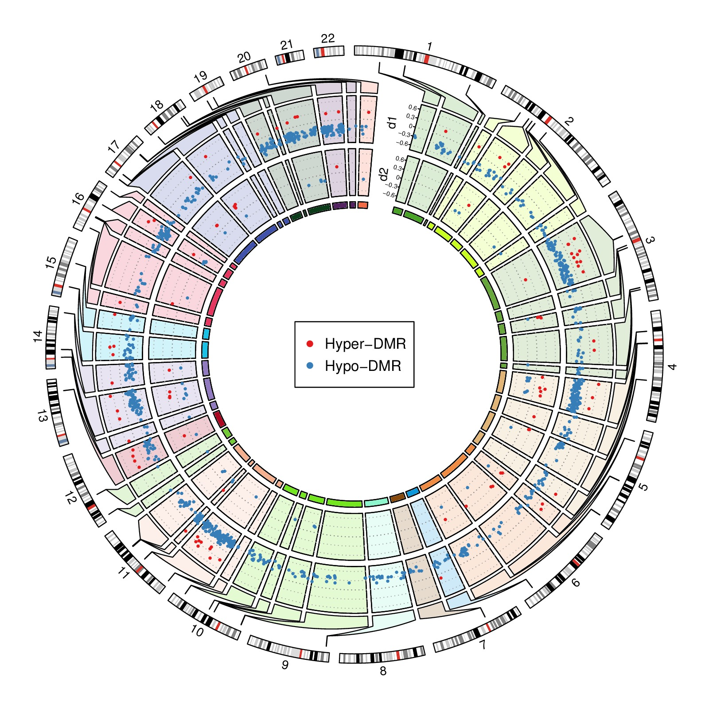

load("example/tagments_WGBS_DMR.RData")
library(circlize)
circos.par(gap.degree = 2, start.degree = 90)
circos.initializeWithIdeogram(chromosome.index = paste0("chr", 1:22), plotType = "ideogram",
ideogram.height = 0.03)
# add labels of chromosomes
for(chr in get.all.sector.index()) {
xlim = get.cell.meta.data("cell.xlim", sector.index = chr)
ylim = get.cell.meta.data("cell.ylim", sector.index = chr)
circos.text(mean(xlim), ylim[2], gsub("chr", "", chr), niceFacing = TRUE, cex = 0.8,
adj = c(0.5, -0.5), sector.index = chr)
}
# calculate position of each tagment measured in the polar coordinate system
for(i in seq_len(nrow(tagments))) {
tagments[i, "theta1"] = circlize(tagments[i, 2], 1, sector.index = tagments[i, 1])[1, 1]
tagments[i, "theta2"] = circlize(tagments[i, 3], 1, sector.index = tagments[i, 1])[1, 1]
}
r = circlize:::get_most_inside_radius()
circos.clear()
par(new = TRUE)
set.seed(123)
chr_bg_color = rand_color(22, transparency = 0.8)
names(chr_bg_color) = paste0("chr", 1:22)
circos.par(cell.padding = c(0.02, 0, 0.02, 0), gap.degree = c(rep(1, nrow(tagments)-1), 10),
start.degree = 75, points.overflow.warning = FALSE)
circos.initialize(factors = factor(rownames(tagments), levels = rownames(tagments)),
xlim = as.matrix(tagments[, 2:3]))
circos.track(ylim = c(0, 1), panel.fun = function(x, y) {
si = get.cell.meta.data("sector.index")
chr = gsub("^(chr.*?)-.*$", "\\1", si)
theta1 = tagments[si, "theta1"]
theta2 = tagments[si, "theta2"]
xlim = get.cell.meta.data("cell.xlim")
ylim = get.cell.meta.data("cell.ylim")
cell.top.radius = get.cell.meta.data("cell.top.radius")
# map from polar coordinate system to data coordinate system
df = reverse.circlize(c(theta1, theta2), c(cell.top.radius, cell.top.radius))
x21 = df[1, 1]
x22 = df[2, 1]
y21 = df[1, 2]
y22 = df[2, 2]
x11 = xlim[1]
x12 = xlim[2]
y11 = ylim[1]
y12 = ylim[1]
circos.polygon(c(x11, x11, x21, x21, x22, x22, x12, x12, x11),
c(y11, (y21 - y11)/3, (y21 - y11)/3*2, y21, y22, (y22 - y12)/3*2, (y22 - y12)/3, y12, y11),
col = chr_bg_color[chr])
}, track.margin = c(0, 1 - r), cell.padding = c(0, 0, 0, 0), bg.border = NA, track.height = 0.1)
max_abs = max(abs(c(DMR1$methDiff, DMR2$methDiff)))
max_abs = ceiling(max_abs*10)/10
circos.track(ylim = c(-max_abs, max_abs), panel.fun = function(x, y) {
si = get.cell.meta.data("sector.index")
chr = gsub("^(chr\\d+).*$", "\\1", si)
xlim = get.cell.meta.data("cell.xlim")
ylim = get.cell.meta.data("cell.ylim")
circos.rect(xlim[1], ylim[1], xlim[2], ylim[2], col = chr_bg_color[[chr]])
for(h in seq(-max_abs, max_abs, by = 0.3)) {
circos.lines(xlim, c(h, h), lty = 3, col = "#AAAAAA")
}
circos.lines(xlim, c(0, 0), lty = 3, col = "#888888")
subset = DMR1[DMR1$tagment == si, , drop = FALSE]
if(nrow(subset) > 0) {
circos.points((subset[[2]] + subset[[3]])/2, subset$methDiff,
col = ifelse(subset$methDiff > 0, "#E41A1C", "#377EB8"), pch = 16, cex = 0.5)
}
}, bg.border = 1, track.height = 0.15)
first_sector = get.all.sector.index()[1]
circos.yaxis(side = "left", at = seq(-0.6, 0.6, by = 0.3), sector.index = first_sector,
labels.cex = 0.4)
xlim = get.cell.meta.data("cell.xlim", sector.index = first_sector)
ylim = get.cell.meta.data("cell.ylim", sector.index = first_sector)
circos.text(xlim[1], mean(ylim), "d1", facing = "clockwise", niceFacing = TRUE, cex = 0.8,
adj = c(0.5, degree(6)), sector.index = first_sector)
circos.track(ylim = c(-max_abs, max_abs), panel.fun = function(x, y) {
si = get.cell.meta.data("sector.index")
chr = gsub("^(chr\\d+).*$", "\\1", si)
xlim = get.cell.meta.data("cell.xlim")
ylim = get.cell.meta.data("cell.ylim")
circos.rect(xlim[1], ylim[1], xlim[2], ylim[2], col = chr_bg_color[[chr]])
for(h in seq(-max_abs, max_abs, by = 0.3)) {
circos.lines(xlim, c(h, h), lty = 3, col = "#AAAAAA")
}
circos.lines(xlim, c(0, 0), lty = 3, col = "#888888")
subset = DMR2[DMR2$tagment == si, , drop = FALSE]
if(nrow(subset) > 0) {
circos.points((subset[[2]] + subset[[3]])/2, subset$methDiff,
col = ifelse(subset$methDiff > 0, "#E41A1C", "#377EB8"), pch = 16, cex = 0.5)
}
}, bg.border = 1, track.height = 0.15)
circos.yaxis(side = "left", at = seq(-0.6, 0.6, by = 0.3), sector.index = first_sector,
labels.cex = 0.4)
xlim = get.cell.meta.data("cell.xlim", sector.index = first_sector)
ylim = get.cell.meta.data("cell.ylim", sector.index = first_sector)
circos.text(xlim[1], mean(ylim), "d2", facing = "clockwise", niceFacing = TRUE, cex = 0.8,
adj = c(0.5, degree(6)), sector.index = first_sector)
circos.track(ylim = c(0, 1), panel.fun = function(x, y) {
cate = get.cell.meta.data("sector.index")
chr = gsub("^(chr\\d+).*$", "\\1", cate)
xlim = get.cell.meta.data("cell.xlim")
ylim = get.cell.meta.data("cell.ylim")
circos.rect(xlim[1], ylim[1], xlim[2], ylim[2], col = gsub("\\d\\d$", "", chr_bg_color[[chr]]))
}, track.height = 0.02, cell.padding = c(0, 0, 0, 0))
circos.clear()
legend("center", pch = 16, legend = c("Hyper-DMR", "Hypo-DMR"), col = c("#E41A1C", "#377EB8"))
par(new = FALSE)